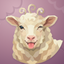
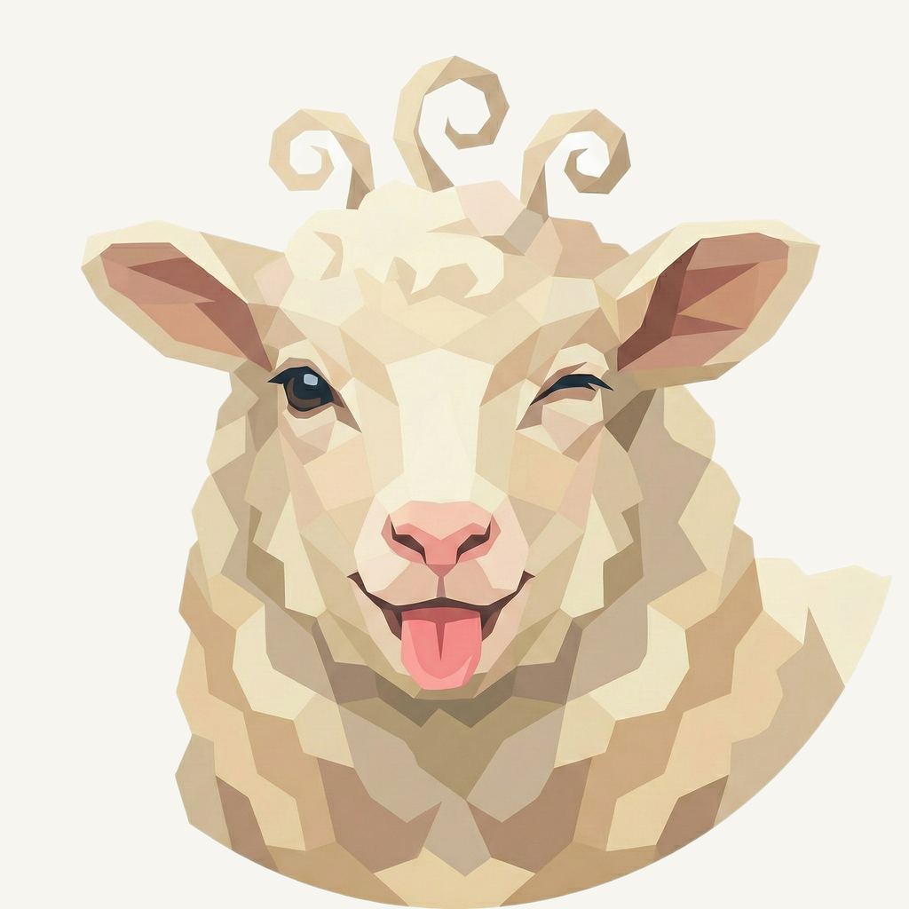
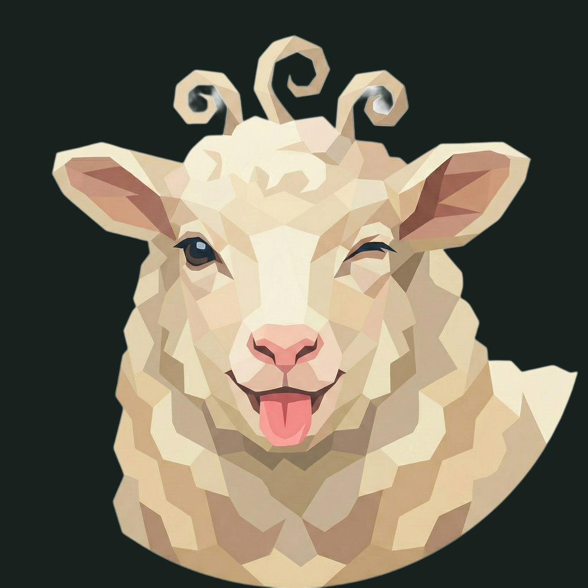

01 / Composition
The same mischievous wink
The sheep, curled forelock, wink, tongue, ears, and original bust framing remain unchanged. No neck extension or new animal drawing is introduced.
Animal family · Refined presentation
The familiar woolly wink, on a soft rose field of cloudlike folds.
Original artwork retained · finishing 01
Native 2048 × 2048
01 / Composition
The sheep, curled forelock, wink, tongue, ears, and original bust framing remain unchanged. No neck extension or new animal drawing is introduced.
02 / Drawing
Broad ivory and warm cream facets keep the face light. The original tongue remains the playful accent; pale anatomy and antialiased boundaries are copied exactly.
03 / Presentation
A deeper rose field gives the ivory wool contrast. Wide uneven scallops, fine grain, and shallow lighting suggest a tactile wool fold around the empty edges.
Presentation tiles at 128/64 px; transparent artwork for small app and browser marks.

Cream ears, a dark eye, and the pink tongue remain the key cues at 32 px. Tiny wool facets simplify at 16 px; transparent artwork is used for the sidebar and favicon.
A designed background, with colors sampled from the untouched original.
Select a swatch to copy its hex value. The Wooly UI primary (#DD3CA7) remains a separate product color.
One retained foreground, checked on two contrasting backgrounds.


Original artwork retained · zero generation calls · native 2048 × 2048
Loading brief…
The original animal was retained without a model request. These owner-provided boards guide the independently composed matte field, light, and shallow surface texture.
{kind=link}
{kind=link}
{kind=link}
{kind=link}
{kind=link}